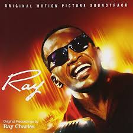

Ray Charles
1930-2004
Ray Charles Robinson was an American singer, songwriter, and pianist and is regarded as one of the most iconic and influential singers in history, and was often referred to by contemporaries as "The Genius". Among friends and fellow musicians he preferred being called "Brother Ray". Charles was blinded during childhood, possibly due to glaucoma. Charles pioneered the soul music genre during the 1950s by combining blues, jazz, rhythm and blues, and gospel styles into the music he recorded for Atlantic Records.
Ray's 10 most popular hits
- I Can’t Stop Loving You (1957)
- Unchain My Heart (1958)
- Ain’t But The One (1975)
- I’ve Got A Woman (1958)
- Georgia On My Mind (1979)
- What’d I Say (1959)
- Shake A Tail Feather (1980)
- Tell All The World About You(1959)
- Winter Wonderland (1985)
- Don’t Let The Sun Catch You Cryin (1959)

Playing "I Can't Stop Loving You"